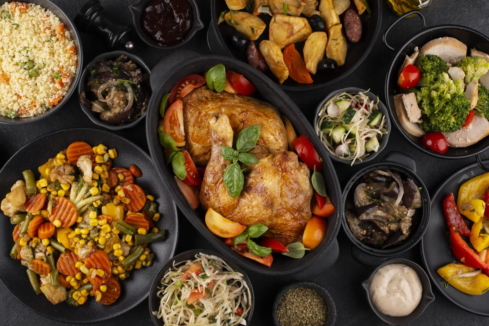
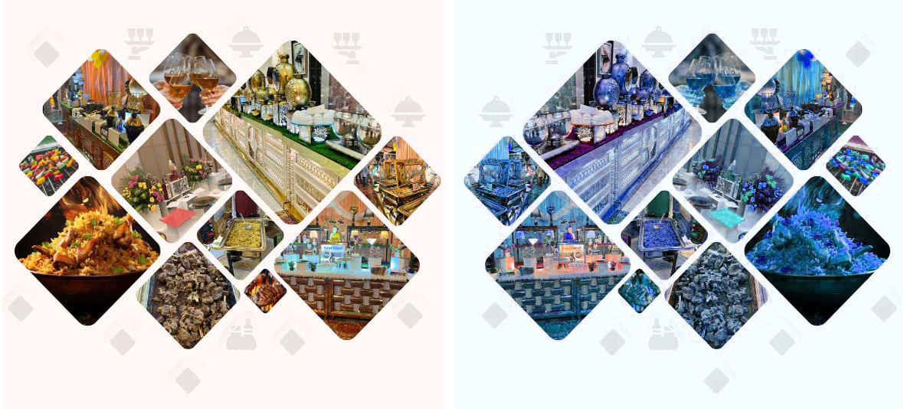

Forword
AHMED CATERING & SERVICES
As one of the most well-reputed and widely recognized event planners
& caterers around the country, we deliver a one stop shop for all your needs!

Catering is one of the most important aspect of events in Pakistan. Specially when it comes to private events such as weddings, catering is sometimes considered even more important than the décor. .
Yes, you heard that right! It is said, a Pakistani guest can forget the bridal dress and the décor but they always remembers how good or bad the food was. We understand this insight of Pakistani audience and therefore offer tremendously impeccable catering services. We offer furnishers, crockery, cutlery, buffet & chaffing tables and waiters (female and male).What is catering services? It is nothing very complex, this term simply means the process of making and providing food for various types of events, such as private and corporate events.These events that are catered, either take place on a rented venue, it could be a farmhouse, a marquee, a hotel or a hall, or it could take place at client’s own property i.e., their house.
